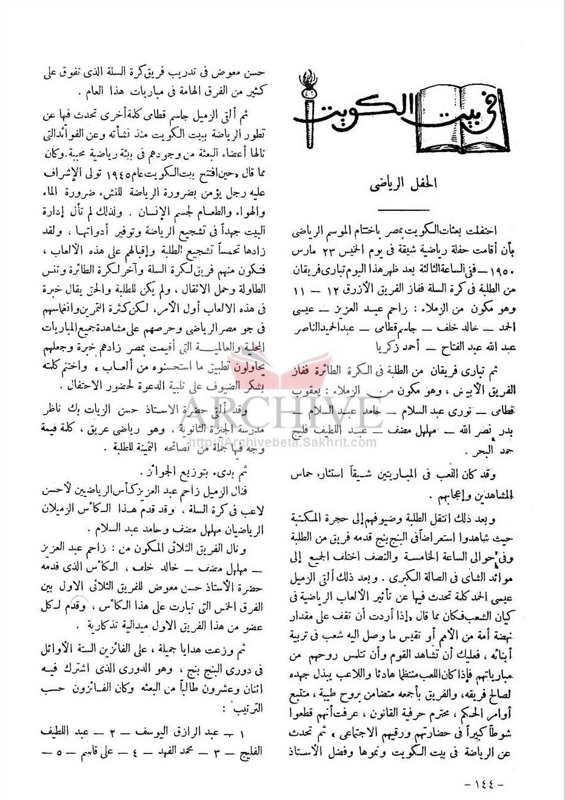
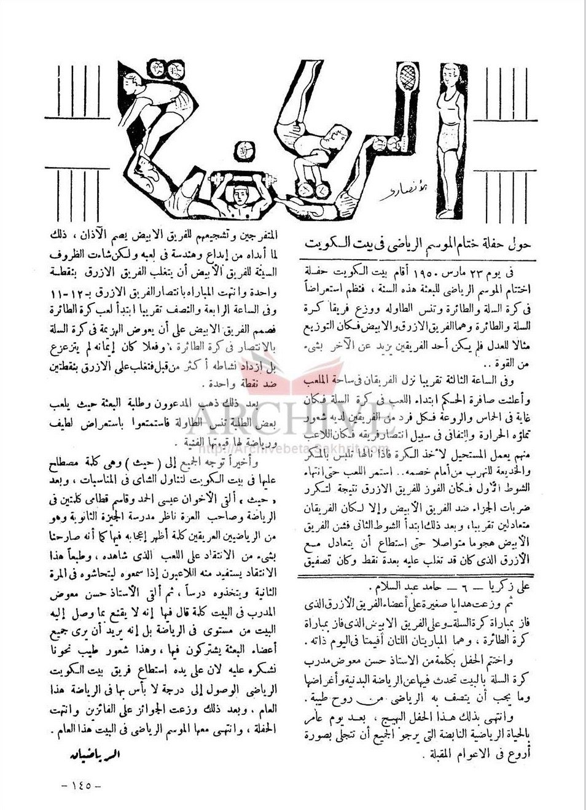
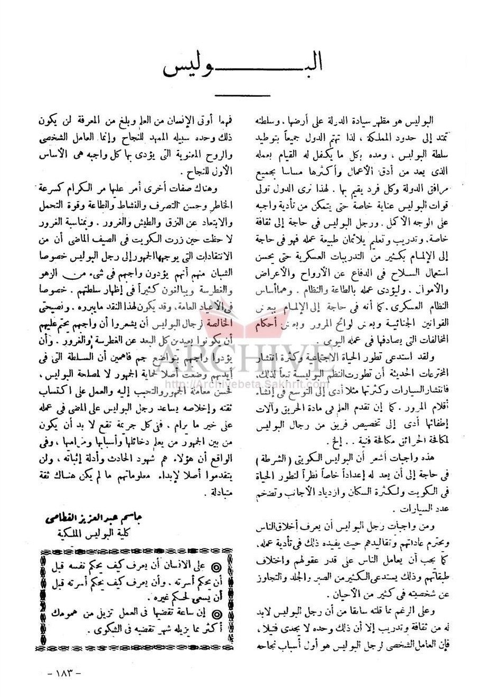
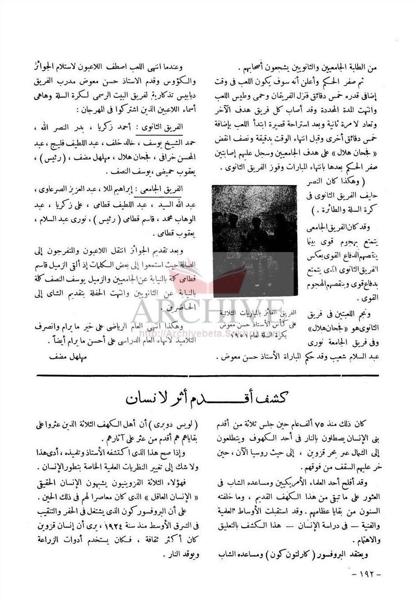
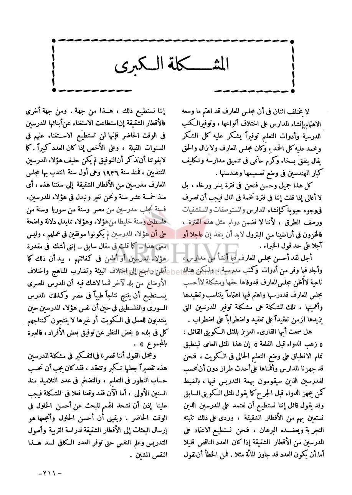
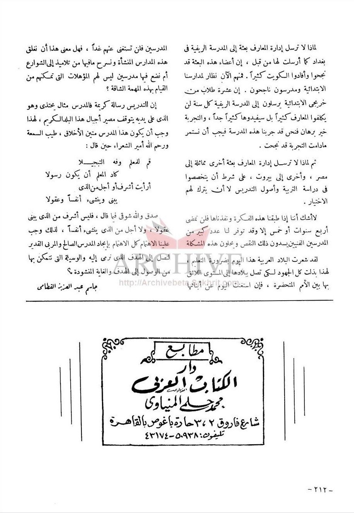
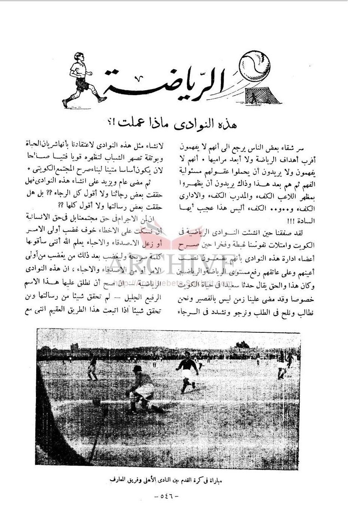
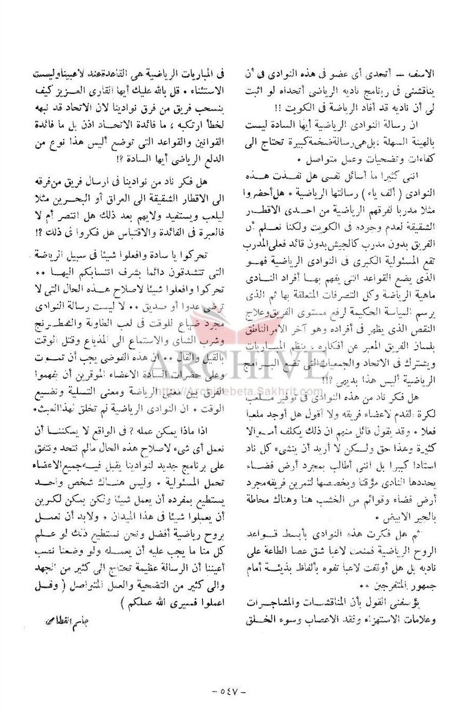

1950 to 1953, Al-Ba’tha · Magazine pages, Al-Ba’tha, 1950 to 1953, reprinted by the Center for Research and Kuwaiti Studies, Kuwait, 1997
Jassim Al-Qatami in Al-Ba’tha, 1950 to 1953: «The Police» and his writing on sport, with Abdullatif and Yacoub in the Kuwait House teams
What it is
1. On 23 March 1950 Jassim Qatami played in the winning basketball team at the Kuwait House sports festival in Cairo and spoke about the growth of sport at the house since 1945; Yacoub Qatami played volleyball. 2. In May 1950, signing from the Royal Police College, Jassim wrote «The Police» on the training and conduct a police officer needs. 3. From 1951 to 1953 he wrote «Opinion», «The Wretched», «On the Football Association’s decision», «The Great Problem» and two pieces called «Sport». 4. In May 1951 Muhalhil Al-Mudhaf’s report on sport at Kuwait House lists Jassim, Abdullatif and Yacoub Qatami among the players.
Why it matters
Jassim’s signed articles from his police college years, and the family’s students in the Kuwait House teams.
Page copies












Sources
Al-Ba’tha, 1950 to 1953, reprinted by the Center for Research and Kuwaiti Studies, Kuwait, 1997; issue and page given with each image
How this text was made: Photographed from the printed pages. «Qasim Qatami», who also speaks at the 1950 festival, is taken to be a misprint for Jassim (Noor Faisal Al-Qatami, 21 November 2026).
Open in the interactive site